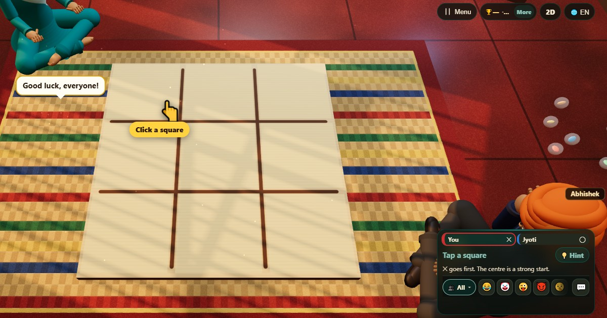

Tic-Tac-Toe: play free online and learn the rules
▶ Play Tic-Tac-Toe now🌍 Play online👫 Play with friends
- 👥 2 players
- ⏱ 1–3 minutes
- 👤 guest play
- 🌍 online opponents
- 🤖 computer players
- 👫 play with friends
- 🆓 free, no sign-up
Tic-Tac-Toe, also called noughts and crosses, is probably the first strategy game most people learn: a grid of nine squares, and three in a line to win. Careful players always draw, so the fun lies in setting a trap for someone who slips.

Ways to play Tic-Tac-Toe
- 👤 Guest play Start straight away against computer players, no account and no sign-up. Choose 2 players.
- 🌍 Play online Get matched with real players from around the world. If nobody is free within a few seconds, computer players take the empty seats so you are never left waiting.
- 👫 Play with friends Open a room, and friends join from their own phones with a 6-digit code or by scanning a QR code. Works on the same Wi-Fi or across the internet.
- 📱 One phone Pass one phone around the table; secrets stay hidden until it is your turn.
- 👀 Watch Let the computer players show you how the game goes before you jump in.
How to play
- One player is ✕ and the other is ◯. ✕ goes first.
- Take turns claiming one free square.
- Three of your marks in a line, across, down or diagonally, wins.
Scoring
A game ends in a win or a draw. The result table shows 1 for the winner.
Who wins
The first to make a line of three wins. If all nine squares fill with no line, it's a draw.
Tips
- Take the centre or a corner first.
- Look for a fork: one move that makes two lines at once.
- Always block a line of two before you do anything else.
Questions
Can you always win at Tic-Tac-Toe?
No. If both players play well, every game ends in a draw.
Can the computer be beaten?
Yes. It usually plays well but sometimes slips, so stay alert for your chance.
How do you play Tic-Tac-Toe online with friends?
Open Tic-Tac-Toe on ChitPlay and choose Play with Friends. One phone opens a room and gets a 6-digit code; your friends type the code or scan the QR code on their own phones and join. No sign-up is needed.
Can I play Tic-Tac-Toe without downloading anything?
Yes. Tic-Tac-Toe runs in the web browser on phones, tablets and computers. Open www.chitplay.com, pick Tic-Tac-Toe and play as a guest.
How many players can play Tic-Tac-Toe?
Tic-Tac-Toe on ChitPlay is for 2 players. Computer players fill any empty seats, so you can always start a game.
Is Tic-Tac-Toe free to play?
Yes, Tic-Tac-Toe is completely free on ChitPlay. There is no real money, betting or prizes, and points have no value outside the game.
Can I play Tic-Tac-Toe against the computer?
Yes. Choose Play and ChitPlay's computer players take the other seats, at an easy, normal or hard level.
What is Tic-Tac-Toe called in other languages?
- हिन्दी: काटा ज़ीरो (टिक-टैक-टो)English: Tic-Tac-Toe
- Hinglish: Zero Kata (Tic-Tac-Toe)English: Tic-Tac-Toe
- Español: Tres en rayaEnglish: Tic-Tac-Toe
- Português: Jogo da velhaEnglish: Tic-Tac-Toe
- Français: MorpionEnglish: Tic-Tac-Toe
- Deutsch: Tic-Tac-ToeEnglish: Tic-Tac-Toe
- Bahasa Indonesia: Tic-Tac-Toe (XOX)English: Tic-Tac-Toe
- Türkçe: XOX (Tic-Tac-Toe)English: Tic-Tac-Toe
- Italiano: TrisEnglish: Tic-Tac-Toe
- 日本語: 三目並べ（まるばつゲーム）English: Tic-Tac-Toe
- 한국어: 틱택토 (삼목)English: Tic-Tac-Toe
- 中文: 井字棋English: Tic-Tac-Toe
- Русский: Крестики-ноликиEnglish: Tic-Tac-Toe
- اردو: زیرو کاٹاEnglish: Tic-Tac-Toe
- नेपाली: काटाकुटीEnglish: Tic-Tac-Toe
- বাংলা: কাটাকুটিEnglish: Tic-Tac-Toe
Game ideas
More games


Cops and Robbers (Raja Rani Chor Police) · All games
Points in this game have no value. ChitPlay involves no real money, betting or prizes.